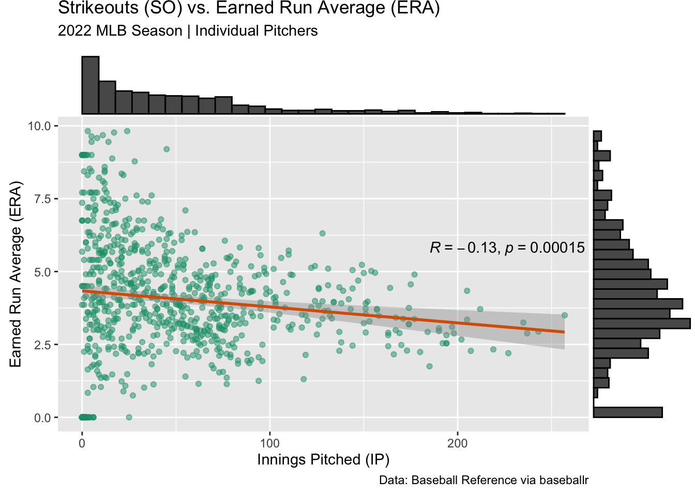
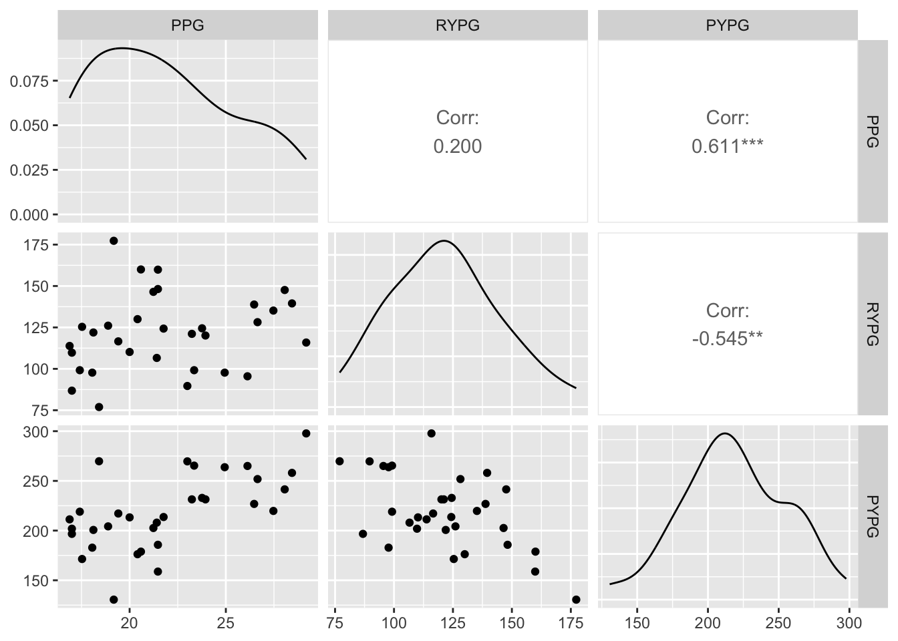
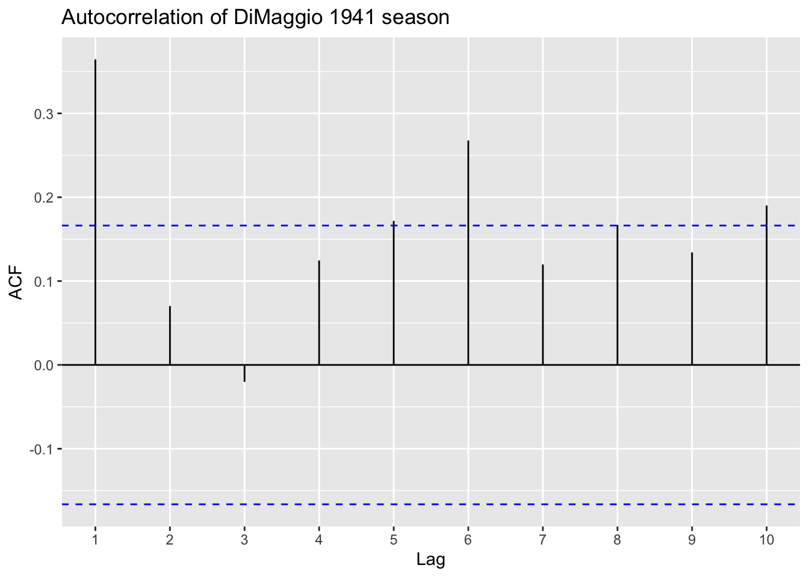
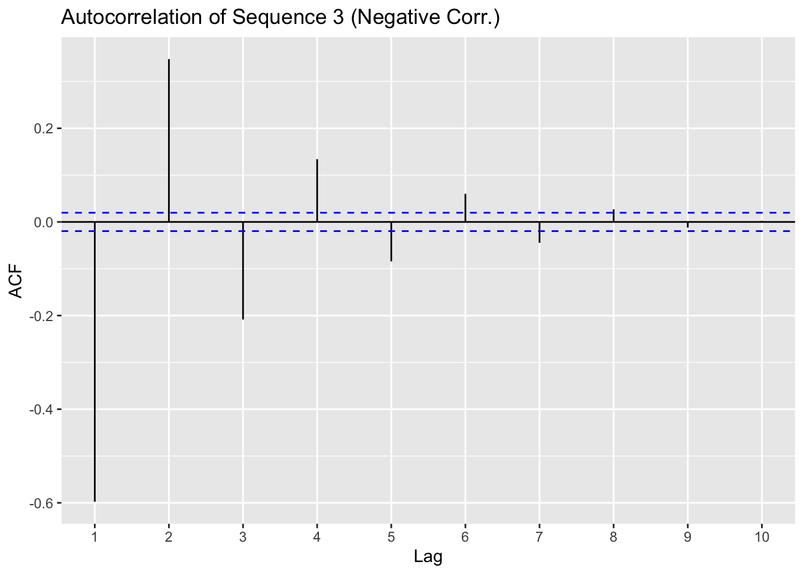
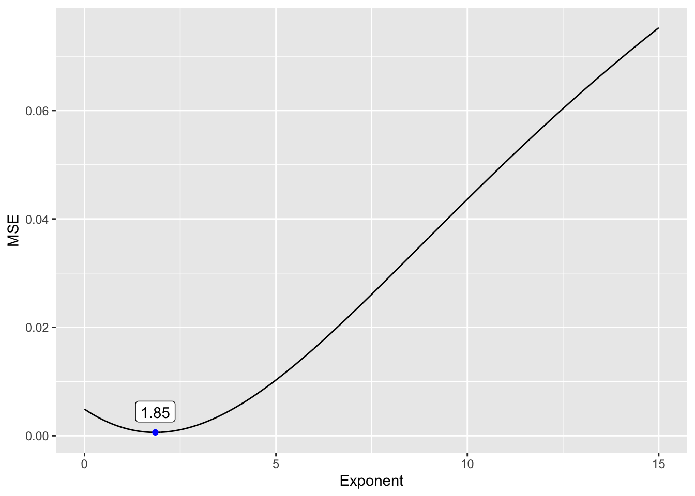

Chapter 6 Measures of Association
This chapter will examine various measures of association betweeen two or more variables. A popular measure of association is Pearson’s Correlation Coefficient for two continuous, quantitative variables. Other measures of association are more appropriate for other types of data like qualitative data.
6.1 Pearson Correlation Coefficient
Definition 6.1 The Pearson correlation coefficient (also known as Pearson’s R or correlation coefficient) is a measure of linear relationship between two quantitative variables.
For two random variables, \(X\) and \(Y\), the Pearson correlation coefficient, \(\rho\), is:
\(\rho = \frac{Cov(X,Y)}{\sigma_X \sigma_Y}\)
For two sets of sample data, \(\{x_1,x_2,\ldots,x_n\}\) and \(\{y_1,y_2,\ldots,y_n\}\), the Pearson correlation coefficient is:
\(r_{xy} = \frac{\sum_{i=1}^n (x_i-\bar{x})(y_i-\bar{y})}{\sqrt{\sum_{i=1}^n(x_i-\bar{x})^2}\sqrt{\sum_{i=1}^n(y_i-\bar{y})^2}}\)
Example 6.1 Download pitching data for individual pitchers in the 2022 MLB season. Investigate the correlation between common pitching statistics.
library(tidyverse)
library(knitr)
library(baseballr)
mlb22_all <- bref_daily_pitcher("2022-01-01", "2022-12-31") %>%
fip_plus()
mlb22_pitch <- mlb22_all %>%
dplyr::select(Name, IP, SO, uBB, HR, ERA, FIP) %>%
dplyr::arrange(dplyr::desc(IP))
mlb22_pitch %>%
head(n=10) %>%
kable(booktabs=T)| Name | IP | SO | uBB | HR | ERA | FIP |
|---|---|---|---|---|---|---|
| Sandy Alcantara | 228.2 | 207 | 49 | 16 | 2.28 | 2.97 |
| Aaron Nola | 205.0 | 235 | 28 | 19 | 3.25 | 2.57 |
| Miles Mikolas | 202.1 | 153 | 39 | 25 | 3.29 | 3.87 |
| Corbin Burnes | 202.0 | 243 | 51 | 23 | 2.94 | 3.14 |
| Framber Valdez | 201.1 | 194 | 67 | 11 | 2.82 | 3.06 |
| Gerrit Cole | 200.2 | 257 | 50 | 33 | 3.50 | 3.47 |
| Merrill Kelly | 200.1 | 177 | 59 | 21 | 3.37 | 3.62 |
| Shane Bieber | 200.0 | 198 | 36 | 18 | 2.88 | 2.87 |
| Alek Manoah | 196.2 | 180 | 51 | 16 | 2.24 | 3.35 |
| MartÃn Pérez | 196.1 | 169 | 69 | 11 | 2.89 | 3.26 |
library(GGally)
mlb22_pitch %>% select(-Name) %>% ggpairs()
library(ellipse)
library(RColorBrewer)
# Use of the mtcars data proposed by R
data <- mlb22_pitch %>% select(-Name) %>% cor()
# Build a Pannel of 100 colors with Rcolor Brewer
my_colors <- brewer.pal(5, "Spectral")
my_colors <- colorRampPalette(my_colors)(100)
# Order the correlation matrix
ord <- order(data[1, ])
data_ord <- data[ord, ord]
plotcorr(data_ord, col=my_colors[data_ord*50+50], mar=c(1,1,1,1))
# Example adapted from:
# https://r-graph-gallery.com/273-custom-your-scatterplot-ggplot2.html
library(ggpubr)
mlb22_pitch %>%
ggplot(aes(x=IP,y=SO)) +
geom_point(
color="black",
fill="#69b3a2",
shape=22,
alpha=0.5,
size=2
) +
geom_smooth(method=lm,se=F,color="black") +
labs(title = "Innings Pitched vs. Strikeouts",
subtitle = "2022 MLB Season | Individual Pitchers",
caption = "Data: Baseball Reference via baseballr",
x = "Innings Pitched (IP)",
y = "Strikeouts (SO)") +
stat_cor(method = "pearson", label.x = 155, label.y = 70)
library(ggExtra)
p <- mlb22_pitch %>%
ggplot(aes(x=SO,y=ERA)) +
geom_point()
ggMarginal(p, type="histogram")library(RColorBrewer)
color_pal <- brewer.pal(n = 8, name = "Dark2")
p <- mlb22_pitch %>% filter(ERA <= 10.00) %>%
ggplot(aes(x=SO,y=ERA)) +
geom_point(alpha=0.5,color=color_pal[1]) +
geom_smooth(method="lm",color=color_pal[2]) +
stat_cor(method = "pearson", label.x = 185, label.y = 5.8) +
labs(title = "Strikeouts (SO) vs. Earned Run Average (ERA)",
subtitle = "2022 MLB Season | Individual Pitchers",
caption = "Data: Baseball Reference via baseballr",
x = "Innings Pitched (IP)",
y = "Earned Run Average (ERA)")
ggMarginal(p, type="histogram")## `geom_smooth()` using formula = 'y ~ x'
## `geom_smooth()` using formula = 'y ~ x'
## `geom_smooth()` using formula = 'y ~ x'
mlb22_pitch %>%
ggplot(aes(x=ERA,y=FIP)) +
geom_point(alpha=0.5,color=color_pal[1]) +
scale_x_continuous(limits=c(0,5)) +
scale_y_continuous(limits=c(0,5)) +
labs(
title = "Earned Run Average (ERA) vs. Fielding Independent Pitching (FIP)",
subtitle = "2022 MLB Season | Individual Pitchers",
caption = "Data: Baseball Reference via baseballr",
x = "Earned Run Average (ERA)",
y = "Fielding Independent Pitching (FIP)")
rox22_pitch <- mlb22_all %>%
select(Name,Team,IP,H,uBB,ERA,FIP) %>%
filter(Team=="Colorado")
rox22_pitch %>%
arrange(desc(IP)) %>%
kable(booktabs=T)| Name | Team | IP | H | uBB | ERA | FIP |
|---|---|---|---|---|---|---|
| Germán Márquez | Colorado | 181.2 | 185 | 63 | 4.95 | 4.72 |
| Kyle Freeland | Colorado | 174.2 | 193 | 53 | 4.53 | 4.21 |
| Chad Kuhl | Colorado | 137.0 | 155 | 57 | 5.72 | 5.24 |
| Austin Gomber | Colorado | 124.2 | 137 | 33 | 5.56 | 4.52 |
| Ryan Feltner | Colorado | 97.1 | 102 | 35 | 5.83 | 4.76 |
| Antonio Senzatela | Colorado | 92.1 | 133 | 23 | 5.07 | 4.06 |
| Daniel Bard | Colorado | 60.1 | 35 | 24 | 1.79 | 2.81 |
| Carlos Estévez | Colorado | 57.0 | 44 | 22 | 3.47 | 4.02 |
| Jake Bird | Colorado | 47.2 | 45 | 20 | 4.91 | 4.79 |
| Jhoulys ChacÃn | Colorado | 47.1 | 55 | 21 | 7.61 | 4.94 |
| Alex Colomé | Colorado | 47.0 | 57 | 20 | 5.74 | 4.41 |
| Ty Blach | Colorado | 44.1 | 51 | 9 | 5.89 | 3.72 |
| Lucas Gilbreath | Colorado | 43.0 | 37 | 26 | 4.19 | 3.53 |
| Justin Lawrence | Colorado | 42.2 | 44 | 22 | 5.70 | 3.40 |
| Tyler Kinley | Colorado | 24.0 | 21 | 6 | 0.75 | 1.74 |
| Ashton Goudeau | Colorado | 20.1 | 25 | 10 | 7.08 | 4.95 |
| Chad Smith | Colorado | 18.0 | 16 | 15 | 7.50 | 4.83 |
| Gavin Hollowell | Colorado | 7.0 | 7 | 4 | 7.71 | 4.40 |
| Jordan Sheffield | Colorado | 2.0 | 2 | 2 | 0.00 | 5.11 |
| Noah Davis | Colorado | 1.0 | 3 | 1 | 18.00 | 15.11 |
| Brian Serven | Colorado | 1.0 | 0 | 1 | 0.00 | 6.11 |
| Randal Grichuk | Colorado | 1.0 | 0 | 0 | 0.00 | 3.11 |
rox22_pitch %>%
ggplot(aes(x=H,y=uBB,size=IP)) +
geom_point(alpha=0.5,color=color_pal[1]) +
labs(title = "Colorado Rockies Pitchers: Hits Allowed vs. Unintentional Walks",
subtitle = "2022 MLB Season | Individual Pitchers",
caption = "Data: Baseball Reference via baseballr",
x = "Hits Allowed (H)",
y = "Unintentional Walks (uBB)")
6.1.1 Partial Correlation and Confounding Variables
As seen in the previous example, counting statistics are often highly correlated. In particular, we may want to speculate that pitchers with poor control (high walks) tend to give up lots of hits due to poor control. This is only due to the presence of a lurking variable (innings pitched). To account for a lurking variable, one can calculate partial correlation coefficient in such situations.
Example 6.2 Let \(X,Y,Z\) be random variables and let \(r_{XY}\) be the (standard) correlation coefficient between \(X\) and \(Y\). The partial correlation coefficient of \(X\) and \(Y\), controlling for \(Z\) is:
\(r_{XY \bullet Z} = \frac{r_{XY}-r_{XZ}r_{YZ}}{\sqrt{1-r_{XZ}^2}\sqrt{1-r_{YZ}^2}}\)
Example 6.3 Calculate the correlation between strikeouts and (unintentional) walks for pitchers with at least 20 IP during the 2022 season, with and without controlling for innings pitched.
( cor_matrix <- mlb22_all %>% select(H,uBB,IP) %>% cor() )## H uBB IP
## H 1.0000000 0.8766316 0.9698289
## uBB 0.8766316 1.0000000 0.8927844
## IP 0.9698289 0.8927844 1.0000000( cor_without <- cor_matrix[1,2] )## [1] 0.8766316( cor_with <- (cor_matrix[1,2] - cor_matrix[1,3]*cor_matrix[2,3]) /
(sqrt(1-cor_matrix[1,3]^2)*sqrt(1-cor_matrix[2,3]^2)) )## [1] 0.098190686.1.2 Properties of the Linear Correlation Coefficient
Pearson’s correlation coefficient is unaffected by changes in location (adding a constant) or scale (multiplying by a constant) of data. To illustrate this concept, let’s consider the correlation between the number of points scored by the winning team of the Super Bowl and 1) the number of the Super Bowl {1, 2, 3, … , 56} and 2) the year of the Super Bowl {1967, 1968, 1969, … , 2022}.

cor(Super_Bowl_Number, Winning_Team_Points)## [1] 0.1063479cor(Super_Bowl_Year, Winning_Team_Points)## [1] 0.1063479The only difference between the two plots is that the x-axis is shifted. Since the change is essentially a linear (location) transformation, the correlations are identical.
Note: The correlations were equal only because there has been a one-to-one relationship between Super Bowl number and year since 1967. Major League Baseball has had years in which no World Series was held (1904 - boycott, 1994 - players’ strike); thus, the same example applied to the MLB would produce slightly different correlation coefficients.
6.2 Association of Categorical Variables
While Pearson’s correlations can be used to find associations between categorical variables, there are better measures to be used.
Example 6.4 (From Analytic Methods in Sports) Suppose we are given the following partial contingency table that tabulates the number of “complete games” for a starting pitcher by league.
| Yes | No | Total | |
|---|---|---|---|
| NL | 2592 | ||
| AL | 2268 | ||
| Total | 128 | 4732 | 4860 |
Choose values to give the largest and smallest correlations.
Example 1: Small correlation
League <- c(rep(0,2592),rep(1,2268))
Complete <- rep(0,4860)
Complete[1:68] = 1
Complete[2593:(2593+59)]=1
small_corr <- data.frame(League,Complete)
small_corr_table <- table(small_corr)
rownames(small_corr_table) = c("NL","AL")
colnames(small_corr_table) = c("No","Yes")
small_corr_table <- small_corr_table[,c(2,1)]
small_corr_table %>% kable(booktabs=T,digits = 3)| Yes | No | |
|---|---|---|
| NL | 68 | 2524 |
| AL | 60 | 2208 |
cor(small_corr) %>% kable(booktabs=T,digits = 3)| League | Complete | |
|---|---|---|
| League | 1.000 | 0.001 |
| Complete | 0.001 | 1.000 |
Example 2: Large correlation (1)
Complete <- rep(0,4860)
Complete[1:128] = 1
large_corr1 <- data.frame(League,Complete)
large_corr1_table <- table(large_corr1)
rownames(large_corr1_table) = c("NL","AL")
colnames(large_corr1_table) = c("No","Yes")
large_corr1_table <- large_corr1_table[,c(2,1)]
large_corr1_table %>% kable(booktabs=T,digits = 3)| Yes | No | |
|---|---|---|
| NL | 128 | 2464 |
| AL | 0 | 2268 |
cor(large_corr1) %>% kable(booktabs=T,digits = 3)| League | Complete | |
|---|---|---|
| League | 1.000 | -0.154 |
| Complete | -0.154 | 1.000 |
Example 3: Large correlation (2)
Complete <- rep(0,4860)
Complete[2593:(2593+127)] = 1
large_corr2 <- data.frame(League,Complete)
large_corr2 <- data.frame(League,Complete)
large_corr2_table <- table(large_corr2)
rownames(large_corr2_table) = c("NL","AL")
colnames(large_corr2_table) = c("No","Yes")
large_corr2_table <- large_corr2_table[,c(2,1)]
large_corr2_table %>% kable(booktabs=T,digits = 3)| Yes | No | |
|---|---|---|
| NL | 0 | 2592 |
| AL | 128 | 2140 |
cor(large_corr2) %>% kable(booktabs=T,digits = 3)| League | Complete | |
|---|---|---|
| League | 1.000 | 0.176 |
| Complete | 0.176 | 1.000 |
6.2.1 Odds Ratios
Let \(X\) and \(Y\) be two binary, categorical variables with the following contingency table.
| Yes | No | Total | |
|---|---|---|---|
| Yes | a | b | a+b |
| No | c | d | c+d |
| Total | a+c | b+d | a+b+c+d |
One possible way to measure the association between two binary variables is to look at the odds ratio.
Definition 6.2 The odds ratio (OR) is a measure of association between two categorical variables of \(X\) and \(Y\) and is:
\(OR = \frac{ad}{bc}\)
\(OR > 1\) means that \(Y=1\) is more likely when \(X=1\) than when \(X=0\).
\(OR < 1\) means that \(Y=1\) is less likely when \(X=1\) than when \(X=0\).
\(OR = 1\) means that \(Y=1\) is equally likely when \(X=1\) than when \(X=0\).
\(OR\) ranges from 0 to \(\infty\)
The odds ratio allows one to compare the relative likelihoods of \(Y=1\) given \(X=1\) vs. \(X=0\).
\(\text{Ratio of OR} = \frac{P(Y=1|X=1)/P(Y=0|X=1)}{P(Y=1|X=0)/P(Y=0|X=0)}\)
Example 6.5 The following contingency table summarizes complete games by league during the 2012 MLB season.
| Yes | No | |
|---|---|---|
| NL | 59 | 2533 |
| AL | 69 | 2199 |
Calculate the following:
(a) \(P(CG|AL)\)
(b) \(P(CG|NL)\)
(c) \(OR(CG)\)
6.2.2 Yule’s Q
Definition 6.3 Yule’s Q is a measure of association between two categorical variables and is defined by:
\(Q = \frac{OR-1}{OR+1} = \frac{ad-bc}{ad+bc}\)
\(Q\) ranges from -1 to 1, where \(Q=0\) implies no relationship between the variables.
Some general guidelines:
\(Q=0\): No association
\(|Q| < 0.3\): Weak association
\(0.3 \leq |Q| < 0.5\): Moderate association
\(0.5 \leq |Q| < 1\): Strong assocation
\(|Q|=1\): Perfect association
Example 6.6 Calculate Yule’s Q for the four examples (Examples 1-3 and Actual) and determine if there appears to be an association between and complete games for each of these examples
Example 6.7 (From Analytic Methods in Sports) Rafael Nadal is often considered to be the best clay-court tennis player of all-time. Assess this belief by calculating Yule’s Q for the Nadal’s performances between 2008–2012.
mat <- data.frame(matrix(c(1660,3658,5318,863,2715,3578,2523,6373,8896),ncol=3))
rownames(mat) <- c("Clay","Nonclay","Total")
colnames(mat) <- c("Win","Loss","Total")
mat %>% kable(booktabs=T)| Win | Loss | Total | |
|---|---|---|---|
| Clay | 1660 | 863 | 2523 |
| Nonclay | 3658 | 2715 | 6373 |
| Total | 5318 | 3578 | 8896 |
Example 6.8 (From Analytic Methods in Sports) Does the pass rush have an effect on Tom Brady’s performance? We can turn numerical variables into categories and calculate Yule’s Q to help us answer this question. Use the following table to calculate Yule’s Q and assess the belief that the pass rush affects Brady’s performance. Data is given for the 2009–2012 seasons
mat <- data.frame(matrix(c(29,18,47,22,2,24,51,20,71),ncol=3))
rownames(mat) <- c("0-2 sacks","3+ sacks","Total")
colnames(mat) <- c("0-2 TDs","3+ TDs","Total")
mat %>% kable(booktabs=T)| 0-2 TDs | 3+ TDs | Total | |
|---|---|---|---|
| 0-2 sacks | 29 | 22 | 51 |
| 3+ sacks | 18 | 2 | 20 |
| Total | 47 | 24 | 71 |
6.2.3 Chi-Squared Test of Independence
We can formally test whether two categorical variables are related to each other by use of the Chi-Squared Test of Independence.
Theorem 6.1 A Chi-Squared Test of Independence (\(\chi^2-test\)) between two categorical variables has the test statistic \(X^2\) which follows a \(\chi^2(df=(r-1)(c-1))\), where:
\(X^2 = \sum_{i=1}^r\sum_{j=1}^c\frac{(E_{ij}-O_{ij})^2}{E_{ij}}\)
\(O_{ij}\) is the \(i^{th}\) row and \(j^{th}\) column observation count and \(E_{ij} = \frac{R_i \cdot C_j}{N}\)
Note: Sometimes, a Yate’s chi-squared test (or Yate’s correction of continuity) used for 2x2 contingency tables with cell counts under 5. Under this test, the test statistic is:
\(X^2_{Yates} = \sum_{i=1}^r\sum_{j=1}^c\frac{(|E_{ij}-O_{ij}|-0.5)^2}{E_{ij}}\)
Example 6.9 Complete a Chi-Squared Test of Independence for the Tom Brady TDs/Sacks example. Is there evidence of dependence between Touchdowns and Sacks? Explain.
a1 <- data.frame(TDs=rep("0-2",29),Sacks=rep("0-2",29))
a2 <- data.frame(TDs=rep("0-2",18),Sacks=rep("3+",18))
a3 <- data.frame(TDs=rep("3+",22),Sacks=rep("0-2",22))
a4 <- data.frame(TDs=rep("3+",2),Sacks=rep("3+",2))
brady_data = rbind(a1,a2,a3,a4)
chisq.test(table(brady_data$TDs,brady_data$Sacks))##
## Pearson's Chi-squared test with Yates' continuity correction
##
## data: table(brady_data$TDs, brady_data$Sacks)
## X-squared = 5.6468, df = 1, p-value = 0.01749chisq.test(table(brady_data$TDs,brady_data$Sacks),correct = F)##
## Pearson's Chi-squared test
##
## data: table(brady_data$TDs, brady_data$Sacks)
## X-squared = 7.0499, df = 1, p-value = 0.007927Example 6.10 Complete a Chi-Squared Test of Independence for the AL/NL complete game example. Is there evidence of dependence between League and Complete Games? Explain.
a1 <- data.frame(Complete=rep("No",2533),League=rep("NL",2533))
a2 <- data.frame(Complete=rep("No",2199),League=rep("AL",2199))
a3 <- data.frame(Complete=rep("Yes",59),League=rep("NL",59))
a4 <- data.frame(Complete=rep("Yes",69),League=rep("AL",69))
mlb_data = rbind(a1,a2,a3,a4)
chisq.test(table(mlb_data$Complete,mlb_data$League))##
## Pearson's Chi-squared test with Yates' continuity correction
##
## data: table(mlb_data$Complete, mlb_data$League)
## X-squared = 2.4777, df = 1, p-value = 0.1155chisq.test(table(mlb_data$Complete,mlb_data$League),correct=F)##
## Pearson's Chi-squared test
##
## data: table(mlb_data$Complete, mlb_data$League)
## X-squared = 2.7684, df = 1, p-value = 0.09614summary(table(mlb_data$Complete,mlb_data$League))## Number of cases in table: 4860
## Number of factors: 2
## Test for independence of all factors:
## Chisq = 2.7684, df = 1, p-value = 0.096146.3 Rank Correlation
Rank correlation is a nonparametric method to measure the ordinal association between two different variables. Rank correlation can investigate non-linear relationships between variables and thus measure monotonicity.
Definition 6.4 Spearman’s rank correlation coefficient or Spearman’s \(\rho\) is a nonparametric measure of rank correlation and is calculated by:
\(r_s = \frac{Cov(R(X),R(Y))}{\sigma_{R(X)}\sigma_{R(Y)}}\)
That is, the Spearman’s rank correlation coefficient is Pearson’s correlation between the rank values of the two variables.
Example 6.11 nfl22.csv contains NFL team offense statistics for the 2022 season. Investigate the relationship between PF (points scored for) and RPCT (percentage of offensive plays that were rushes). Calculate the ranks for PF and RPCT and use these values to calculate the Spearman correlation coefficient.
nfl22 <- read_csv("data/nfl22.csv",show_col_types = F)
nfl22 <- nfl22 %>% slice(1:32)
nfl22 %>% slice_head(n=10) %>% kable(booktabs=T)| Rk | Tm | G | PF | Yds | Plays | Pass_Att | Pass_Yds | Rush_Att | Rush_Yds |
|---|---|---|---|---|---|---|---|---|---|
| 1 | Kansas City Chiefs | 17 | 496 | 7032 | 1094 | 651 | 5062 | 417 | 1970 |
| 2 | Philadelphia Eagles | 17 | 477 | 6614 | 1124 | 536 | 4105 | 544 | 2509 |
| 3 | Dallas Cowboys | 17 | 467 | 6034 | 1114 | 556 | 3736 | 531 | 2298 |
| 4 | Buffalo Bills | 16 | 455 | 6361 | 1037 | 574 | 4129 | 430 | 2232 |
| 5 | Detroit Lions | 17 | 453 | 6460 | 1092 | 588 | 4281 | 480 | 2179 |
| 6 | San Francisco 49ers | 17 | 450 | 6216 | 1047 | 512 | 3856 | 504 | 2360 |
| 7 | Minnesota Vikings | 17 | 424 | 6145 | 1123 | 672 | 4484 | 404 | 1661 |
| 8 | Cincinnati Bengals | 16 | 418 | 5768 | 1053 | 610 | 4240 | 399 | 1528 |
| 9 | Seattle Seahawks | 17 | 407 | 5976 | 1044 | 573 | 3934 | 425 | 2042 |
| 10 | Jacksonville Jaguars | 17 | 404 | 6075 | 1072 | 596 | 3959 | 448 | 2116 |
nfl22 <- nfl22 %>% mutate(`RPCT`=100*Rush_Att/Plays)
nfl22 <- nfl22 %>%
mutate(PF_Rank = rank(PF),
RPCT_Rank = rank(RPCT))nfl22 %>% select(Tm,PF,PF_Rank,RPCT,RPCT_Rank) %>% slice(1:10) %>% kable(booktabs=T,digits=1)| Tm | PF | PF_Rank | RPCT | RPCT_Rank |
|---|---|---|---|---|
| Kansas City Chiefs | 496 | 32 | 38.1 | 7 |
| Philadelphia Eagles | 477 | 31 | 48.4 | 27 |
| Dallas Cowboys | 467 | 30 | 47.7 | 23 |
| Buffalo Bills | 455 | 29 | 41.5 | 15 |
| Detroit Lions | 453 | 28 | 44.0 | 19 |
| San Francisco 49ers | 450 | 27 | 48.1 | 26 |
| Minnesota Vikings | 424 | 26 | 36.0 | 3 |
| Cincinnati Bengals | 418 | 25 | 37.9 | 5 |
| Seattle Seahawks | 407 | 24 | 40.7 | 11 |
| Jacksonville Jaguars | 404 | 23 | 41.8 | 16 |
nfl22 %>% select(PF,PF_Rank,RPCT,RPCT_Rank) %>% cor(method = "pearson")## PF PF_Rank RPCT RPCT_Rank
## PF 1.0000000000 0.988409408 -0.02501179 0.0008416183
## PF_Rank 0.9884094078 1.000000000 -0.01187428 0.0097158572
## RPCT -0.0250117927 -0.011874280 1.00000000 0.9759711461
## RPCT_Rank 0.0008416183 0.009715857 0.97597115 1.0000000000nfl22 %>% select(PF,PF_Rank,RPCT,RPCT_Rank) %>% cor(method = "spearman")## PF PF_Rank RPCT RPCT_Rank
## PF 1.000000000 1.000000000 0.009715857 0.009715857
## PF_Rank 1.000000000 1.000000000 0.009715857 0.009715857
## RPCT 0.009715857 0.009715857 1.000000000 1.000000000
## RPCT_Rank 0.009715857 0.009715857 1.000000000 1.000000000Example 6.12 Investigate the relationship between PPG (points per game), RYPG (rushing yards per game), and PYPG (passing yards per game) using Spearman’s rank correlation coefficient.
nfl22 <- nfl22 %>% mutate(PPG=PF/G,RYPG=Rush_Yds/G,PYPG=Pass_Yds/G)
nfl22 %>% select(PPG,RYPG,PYPG) %>% cor(method = "spearman")## PPG RYPG PYPG
## PPG 1.0000000 0.2640264 0.6237052
## RYPG 0.2640264 1.0000000 -0.4310203
## PYPG 0.6237052 -0.4310203 1.0000000library(GGally)
nfl22 %>% select(PPG,RYPG,PYPG) %>% ggpairs()
6.4 Serial Correlation
Another type of correlation that we can utilize to look for patterns in sports data is serial correlation.
6.4.1 Autocorrelation
Definition 6.5 The autocorrelation (or serial correlation) of a sequence of outcomes is the Pearson correlation coefficient between successive outcomes or the correlation between outcomes and lag delayed outcomes.
Example 6.13 Simulate three sets of Bernoulli trials (zeros and ones) of length 10000. One dataset should exhibit no serial correlation, one should exhibit positive serial correlation, and one should exhibit negative serial correlation.
set.seed(2023)
len <- 10000
# Easy to simulate independent Bernoulli trials
corr_none <- sample(c(0,1),size=len,prob=c(0.5,0.5),replace=T)
# initialize vectors for other two examples
corr_pos <- rep(0,len)
corr_neg <- rep(0,len)
# Positive serial correlation
# Notice that the probability of switching is less than 0.5
for(i in 1:10000){
if(i == 1){
corr_pos[i] <- sample(c(0,1),size=1,prob=c(0.5,0.5),replace=T)
} else {
if(runif(1)<0.8){
corr_pos[i] <- corr_pos[i-1]
} else {
corr_pos[i] <- 1-corr_pos[i-1]
}
}
}
# Negative serial correlation
# Notice that the probability of switching is greater than 0.5
for(i in 1:10000){
if(i == 1){
corr_neg[i] <- sample(c(0,1),size=1,prob=c(0.5,0.5),replace=T)
} else {
if(runif(1)<0.2){
corr_neg[i] <- corr_neg[i-1]
} else {
corr_neg[i] <- 1-corr_neg[i-1]
}
}
}# Look at first 20 values of each sequence
corr_none[1:20]## [1] 1 1 1 1 1 1 1 0 1 1 0 1 1 0 0 1 1 0 1 0corr_pos[1:20]## [1] 0 0 0 0 1 0 0 0 0 0 0 1 1 1 0 0 0 0 0 0corr_neg[1:20]## [1] 0 1 0 1 1 1 0 0 1 0 1 0 1 0 1 1 0 1 0 1# Calculate mean of each sequence
c(mean(corr_none),mean(corr_pos),mean(corr_neg))## [1] 0.5068 0.5001 0.5006Note that all three sequences have approximately equal probability of 1 and 0, however, the serial correlation differs between them.
corr_none %>% acf(lag.max = 30,main="Autocorrelation of Sequence 1 (No Corr.)")library(ggplot2)
library(gridExtra)
library(forecast)## Registered S3 method overwritten by 'quantmod':
## method from
## as.zoo.data.frame zoo##
## Attaching package: 'forecast'## The following object is masked from 'package:ggpubr':
##
## gghistogramcorr_none %>% ggAcf(lag.max = 10,main='Autocorrelation of Sequence 1 (No Corr.)')
acf(corr_none,lag.max=10,plot=F)##
## Autocorrelations of series 'corr_none', by lag
##
## 0 1 2 3 4 5 6 7 8 9 10
## 1.000 0.007 0.011 0.008 0.009 0.010 0.012 0.011 -0.015 0.000 0.009corr_pos %>% ggAcf(lag.max = 10,main='Autocorrelation of Sequence 2 (Positive Corr.)')
acf(corr_pos,lag.max=10,plot=F)##
## Autocorrelations of series 'corr_pos', by lag
##
## 0 1 2 3 4 5 6 7 8 9 10
## 1.000 0.608 0.375 0.237 0.156 0.104 0.062 0.037 0.023 0.012 -0.008corr_neg %>% ggAcf(lag.max = 10,main='Autocorrelation of Sequence 3 (Negative Corr.)')
acf(corr_neg,lag.max=10,plot=F)##
## Autocorrelations of series 'corr_neg', by lag
##
## 0 1 2 3 4 5 6 7 8 9 10
## 1.000 -0.598 0.348 -0.209 0.134 -0.084 0.060 -0.045 0.027 -0.012 0.0026.4.2 Run Lengths
Another way to investigate serial correlation is to look at the lengths of “streaks” using the rle function.
t(table(rle(corr_none)))## lengths
## values 1 2 3 4 5 6 7 8 9 10 11 12
## 0 1276 604 289 157 66 45 27 9 9 0 1 0
## 1 1219 622 308 150 101 46 20 9 5 2 1 1Example 6.14 Which of the three examples has the most “streaks”? How about fewest streaks?
# Use rle to calculate run lengths
t(table(rle(corr_none)))## lengths
## values 1 2 3 4 5 6 7 8 9 10 11 12
## 0 1276 604 289 157 66 45 27 9 9 0 1 0
## 1 1219 622 308 150 101 46 20 9 5 2 1 1t(table(rle(corr_pos)))## lengths
## values 1 2 3 4 5 6 7 8 9 10 11 12 13 14 15 16 17 18
## 0 201 153 119 91 77 69 54 51 27 32 15 19 14 9 9 5 3 6
## 1 193 174 123 99 77 51 50 35 29 33 26 24 9 2 3 7 10 7
## lengths
## values 19 20 21 22 23 24 25 26 27 29 30 36
## 0 7 2 4 5 1 2 1 1 0 1 1 0
## 1 6 5 3 1 5 2 0 1 1 0 2 1t(table(rle(corr_neg)))## lengths
## values 1 2 3 4 5 6 7
## 0 3189 643 137 18 6 1 0
## 1 3169 665 138 19 2 0 1Example 6.15 Examine the autocorrelation function for Joe DiMaggio’s 1941 and 1942 seasons. Also, calculate the length of his streaks that season.
dimaggio41 <- read_csv("data/dimaggio41.csv", show_col_types = FALSE)
dimaggio41 <- dimaggio41 %>% slice(1:139)
# Create indicator variable for a hit
hit.game41 <- ifelse(dimaggio41$H > 0,1,0)
hit.game41 %>% ggAcf(lag.max = 10,main='Autocorrelation of DiMaggio 1941 season')
acf(hit.game41,lag.max=10,plot=F)##
## Autocorrelations of series 'hit.game41', by lag
##
## 0 1 2 3 4 5 6 7 8 9 10
## 1.000 0.364 0.070 -0.020 0.125 0.172 0.268 0.120 0.167 0.134 0.190t(table(rle(hit.game)))## lengths
## values 1 2 3 4 5 7 8 16 56
## 0 5 4 4 0 0 0 0 0 0
## 1 2 3 2 2 1 1 1 1 1dimaggio42 <- read_csv("data/dimaggio42.csv")
# Create indicator variable for a hit
hit.game42 <- ifelse(dimaggio42$H > 0,1,0)
hit.game42 %>% ggAcf(lag.max = 10,main='Autocorrelation of DiMaggio 1942 season')
acf(hit.game42,lag.max=10,plot=F)##
## Autocorrelations of series 'hit.game42', by lag
##
## 0 1 2 3 4 5 6 7 8 9 10
## 1.000 0.055 -0.009 -0.098 0.013 -0.007 -0.035 -0.003 0.030 -0.077 0.000t(table(rle(hit.game)))## lengths
## values 1 2 3 4 5 7 8 16 56
## 0 5 4 4 0 0 0 0 0 0
## 1 2 3 2 2 1 1 1 1 16.4.3 Wald-Wolfowitz Runs Test
Theorem 6.2 The Wald-Wolfowitz runs test is a nonparametric statistical method for testing the hypothesis of an independent sequence of binary data.
\(H_0:\) Elements of sequence are mutually independent
\(H_a:\) Elements of the sequence are mutually dependent
Let \(N_+\) be the number of runs of the indicator/positive values and let \(N_-\) be the number of runs of the negative values.
The number of runs, \(N = N_+ + N_-\), is approximately normally distributed with:
Mean: \(\mu=\frac{2N_+N_-}{N}+1\)
Variance: \(\sigma^2 = \frac{2N_+N_-(2N_+N_- - N)}{N^2(N-1)}\)
Example 6.16 Complete a WW runs test for the three simulated sequences. State the conclusion of the WW hypothesis test.
library(DescTools)
RunsTest(corr_none)##
## Runs Test for Randomness
##
## data: corr_none
## z = -0.65166, runs = 4967, m = 4932, n = 5068, p-value = 0.5146
## alternative hypothesis: true number of runs is not equal the expected numberRunsTest(corr_pos)##
## Runs Test for Randomness
##
## data: corr_pos
## z = -60.853, runs = 1958, m = 4999, n = 5001, p-value < 2.2e-16
## alternative hypothesis: true number of runs is not equal the expected numberRunsTest(corr_neg)##
## Runs Test for Randomness
##
## data: corr_neg
## z = 59.733, runs = 7988, m = 4994, n = 5006, p-value < 2.2e-16
## alternative hypothesis: true number of runs is not equal the expected numberExample 6.17 Complete a WW runs test for DiMaggio’s 1941 and 1942 seasons. State the conclusion of the WW hypothesis test.
RunsTest(hit.game41)##
## Runs Test for Randomness
##
## data: hit.game41
## z = -4.2075, runs = 27, m = 25, n = 114, p-value = 2.582e-05
## alternative hypothesis: true number of runs is not equal the expected numberRunsTest(hit.game42)##
## Runs Test for Randomness
##
## data: hit.game42
## z = -0.59874, runs = 55, m = 38, n = 116, p-value = 0.5493
## alternative hypothesis: true number of runs is not equal the expected number6.5 Pythagorean Record
Baseball statistican (sabermetrican) Bill James proposed Pythagorean expectation to estimate the percentage (or number) of games that a team is expected to win based on the number of runs they score and the number of runs they allow.
Definition 6.6 The (basic) Pythagorean expectation for a team’s win percentage and win total are given by the following:
\[\text{Pythagorean Win Pct} = PythWin\% = 100 * \frac{RS^2}{RS^2 + RA^2}\]
\[\text{Pythagorean Win Total} = PythWin = N \cdot \frac{RS^2}{RS^2 + RA^2}\]
where for a given team, \(N\) is the number of games, \(RS\) is the number of runs scored, and \(RA\) is the number of runs allowed.
Note that \(RS\) and \(RA\) can be based on season totals or per game averages.
Example 6.18 In 2022, the Colorado Rockies baseball team scored an average of 4.3 runs per game and allowed an average of 5.4 runs per game. The Rockies’ record in 2022 was 69-94 (0.420 win pct). Calculate the Pythagorean win percentage and win total. Did the Rockies underperform or overperform based on these results?
\(PythWin\% = 100 * \frac{RS^2}{RS^2+RA^2} = \frac{4.3^2}{4.3^2+5.4^2} = 38.8\%\)
\(PythWin\% = N \cdot \frac{RS^2}{RS^2+RA^2} = 162 * \frac{4.3^2}{4.3^2+5.4^2} = 63\)
( pythwinpct = 100*(4.3^2)/(4.3^2+5.4^2) )## [1] 38.80378( pythwins = 162*(4.3^2)/(4.3^2+5.4^2) )## [1] 62.86212It turns out that we can find a more optimal estimate of Pythagorean wins by using an exponent different from 2.
For example, Baseball Reference (https://www.sports-reference.com/blog/baseball-reference-faqs/) uses an exponent of 1.83.
Definition 6.7 The (general) Pythagorean expectation for a team’s win percentage and win total are given by the following:
\[\text{Pythagorean Win Pct} = PythWin\% = 100 * \frac{RS^n}{RS^2 + RA^n}\]
\[\text{Pythagorean Win Total} = PythWin = N \cdot \frac{RS^n}{RS^n + RA^n}\]
where for a given team, \(N\) is the number of games, \(RS\) is the number of runs scored, and \(RA\) is the number of runs allowed. \(n\) is optimized for predictive accuracy over a large dataset.
It will be helpful to have a function to find the optimal Pythagorean exponent. Such a function called pyth_opt is given below that minimizes mean squared error. Use plot_flag=1 to generate a plot.
pyth_opt = function(RS,RA,WinPct,digits,plot_flag){
exps = seq(0,15,by=10^(-digits))
n_exps = length(exps)
MSE = rep(NA,n_exps)
for(i in 1:n_exps){
temp_exp = exps[i]
PyWinPct = RS^temp_exp/(RS^temp_exp + RA^temp_exp)
MSE[i] = mean((PyWinPct-WinPct)^2)
}
min_idx = which(MSE==min(MSE))
pyth_opt = exps[min_idx]
if(plot_flag){
df = data.frame(Exponent=exps,MSE=MSE)
df %>% ggplot(aes(x=Exponent,y=MSE)) +
geom_line() +
geom_point(data=df[min_idx,],color="blue") +
geom_label(data = df[min_idx,],
aes(x = Exponent, y = MSE, label = Exponent),vjust=-0.5)
} else {
return(pyth_opt)
}
}Example 6.19 Final season MLB standings and related statistics are given in mlb_2022.csv. Find the optimal value of \(n\) that minimizes mean squared error between actual wins and Pythagorean wins.
mlb_2022 = read_csv("data/mlb_2022.csv")
mlb_2022 %>% slice(1:10) %>% kable(booktabs=T,digits = 4)| Team | W | L | W-L% | R | RA | Rdiff | pythWL |
|---|---|---|---|---|---|---|---|
| Los Angeles Dodgers | 111 | 51 | 0.685 | 5.2 | 3.2 | 2.1 | 116-46 |
| Houston Astros | 106 | 56 | 0.654 | 4.5 | 3.2 | 1.4 | 106-56 |
| Atlanta Braves | 101 | 61 | 0.623 | 4.9 | 3.8 | 1.1 | 100-62 |
| New York Mets | 101 | 61 | 0.623 | 4.8 | 3.7 | 1.0 | 99-63 |
| New York Yankees | 99 | 63 | 0.611 | 5.0 | 3.5 | 1.5 | 106-56 |
| St. Louis Cardinals | 93 | 69 | 0.574 | 4.8 | 3.9 | 0.8 | 95-67 |
| Cleveland Guardians | 92 | 70 | 0.568 | 4.3 | 3.9 | 0.4 | 88-74 |
| Toronto Blue Jays | 92 | 70 | 0.568 | 4.8 | 4.2 | 0.6 | 91-71 |
| Seattle Mariners | 90 | 72 | 0.556 | 4.3 | 3.8 | 0.4 | 89-73 |
| San Diego Padres | 89 | 73 | 0.549 | 4.4 | 4.1 | 0.3 | 86-76 |
pyth_opt(mlb_2022$R,mlb_2022$RA,mlb_2022$`W-L%`,2,1)Example 6.20 For a more accurate estimate of the optimal Pythagorean exponent, use all MLB final standings data from 2000–2017. This is contained in mlb_standings_long.csv.
mlb_long = read_csv("data/mlb_standings_long.csv")
mlb_long %>% slice_head(n = 3) %>% kable(booktabs=T,digits = 4)| yearID | lgID | teamID | G | W | L | R | RA | RD | Wpct |
|---|---|---|---|---|---|---|---|---|---|
| 2000 | AL | ANA | 162 | 82 | 80 | 864 | 869 | -5 | 0.5062 |
| 2000 | NL | ARI | 162 | 85 | 77 | 792 | 754 | 38 | 0.5247 |
| 2000 | NL | ATL | 162 | 95 | 67 | 810 | 714 | 96 | 0.5864 |
mlb_long %>% slice_tail(n = 3) %>% kable(booktabs=T,digits = 4)| yearID | lgID | teamID | G | W | L | R | RA | RD | Wpct |
|---|---|---|---|---|---|---|---|---|---|
| 2017 | AL | TEX | 162 | 78 | 84 | 799 | 816 | -17 | 0.4815 |
| 2017 | AL | TOR | 162 | 76 | 86 | 693 | 784 | -91 | 0.4691 |
| 2017 | NL | WAS | 162 | 97 | 65 | 819 | 672 | 147 | 0.5988 |
pyth_opt(mlb_long$R,mlb_long$RA,mlb_long$Wpct,2,1)
As previously mentioned, sabermetricans tend to use PyExp = 1.83 for MLB.
Example 6.21 Create a scatterplot to compare Team Wins and Team Pythagorean Wins in 2022 and calculate the correlation.
mlb_2022 = mlb_2022 %>% mutate(PyWins=162*R^1.83/(R^1.83+RA^1.83))
mlb_2022 %>% ggplot(aes(x=W,y=PyWins)) + geom_point() + labs(x="Wins") +
geom_abline(intercept=0, slope=1, color="blue", linetype="dashed")
cor(mlb_2022$W,mlb_2022$PyWins)## [1] 0.9764977Example 6.22 The Rockies scored 4.31 runs per game and allowed 5.4 runs per game in 2022. Did the Rockies underperform or overperform based on their Pythagorean record?
mlb_2022 %>% filter(Team=="Colorado Rockies") %>%
mutate(PyWins = 162*4.31^1.83/(4.31^1.83+5.39^1.83)) %>%
kable(booktabs=T,digits = 4)| Team | W | L | W-L% | R | RA | Rdiff | pythWL | PyWins |
|---|---|---|---|---|---|---|---|---|
| Colorado Rockies | 68 | 94 | 0.42 | 4.3 | 5.4 | -1.1 | 65-97 | 64.6548 |
The Rockies won 68 games and were expected to win 65 games based on their Pythagorean record. The Rockies outperformed their Pythagorean record.
Example 6.23 Calculate the Pythagorean exponent for NFL using 2022 season totals. This data is contained in nfl_2022.csv.
nfl_2022 = read_csv("data/nfl_2022.csv")
nfl_2022 %>%
slice_head(n=5) %>%
kable(booktabs=T,digits = 4)| Team | W | L | T | W-L% | PF | PA |
|---|---|---|---|---|---|---|
| Buffalo Bills* | 13 | 3 | 0 | 0.813 | 455 | 286 |
| Miami Dolphins+ | 9 | 8 | 0 | 0.529 | 397 | 399 |
| New England Patriots | 8 | 9 | 0 | 0.471 | 364 | 347 |
| New York Jets | 7 | 10 | 0 | 0.412 | 296 | 316 |
| Cincinnati Bengals* | 12 | 4 | 0 | 0.750 | 418 | 322 |
pyth_opt(nfl_2022$PF,nfl_2022$PA,nfl_2022$`W-L%`,2,1)For 2022, there is an optimal Pythagorean exponent of 3.38. Using a larger dataset of more seasons will give a better estimate.
Football Outsiders (https://www.footballoutsiders.com/stat-analysis/2017/presenting-adjusted-pythagorean-theorem) uses PyExp = 2.37 for NFL.
Similar analyses can be done for other sports as well. PyExp = 13.91 is often used for NBA and PyExp = 2.15 for NHL.